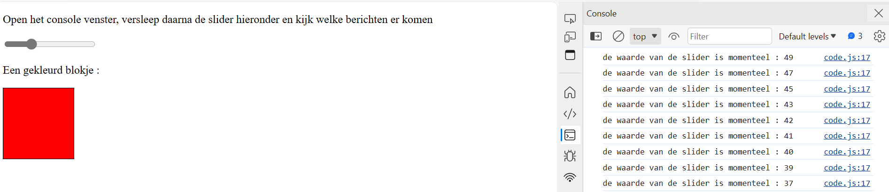

Open het console venster, versleep daarna de slider hieronder en kijk welke berichten er komen
Een gekleurd blokje :
Console output als je de slider verschuift:
sliders[0].addEventListener("change", update); adds an event listener to the first slider in an array, so that when the slider value changes, the update function is executed.
Er zitten HTMLcollections in de variabelen
Er zit 1 element in elke verzameling
Allebei de classes worden maar 1 keer gebruikt.
De slider staat op index 0